Analyse de spectre : débruitage, correction de ligne de base et ajustement de pics#
Cet exemple montre comment analyser un spectre avec DataLab :
Lire le spectre à partir d’un fichier
Appliquer un filtre au spectre
Extraire une région d’intérêt
Ajuster un modèle au spectre
Sauvegarder l’espace de travail dans un fichier
Les menus de DataLab changent en fonction du contexte. Comme nous allons travailler avec un spectre, un signal 1D, nous devons sélectionner le panneau Signal avant de continuer.
Dans un flux de travail typique, nous ouvririons DataLab et lirions le spectre à partir d’un fichier en utilisant « Fichier > Ouvrir… », le bouton dans la barre d’outils, ou en faisant glisser-déposer le fichier dans le panneau de droite. Cependant, pour ce tutoriel, nous utiliserons la fonction « Plugins > Données de test > Charger le spectre de paracétamol » pour générer un spectre de test, ce qui est pratique à des fins de démonstration.
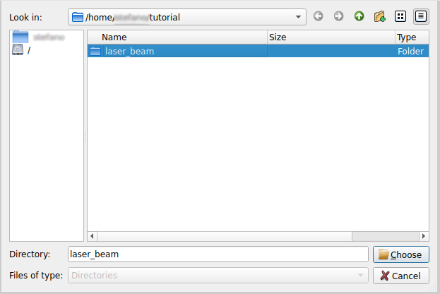
Le menu « Fichier > Ouvrir… » pour ouvrir un fichier de spectre.#
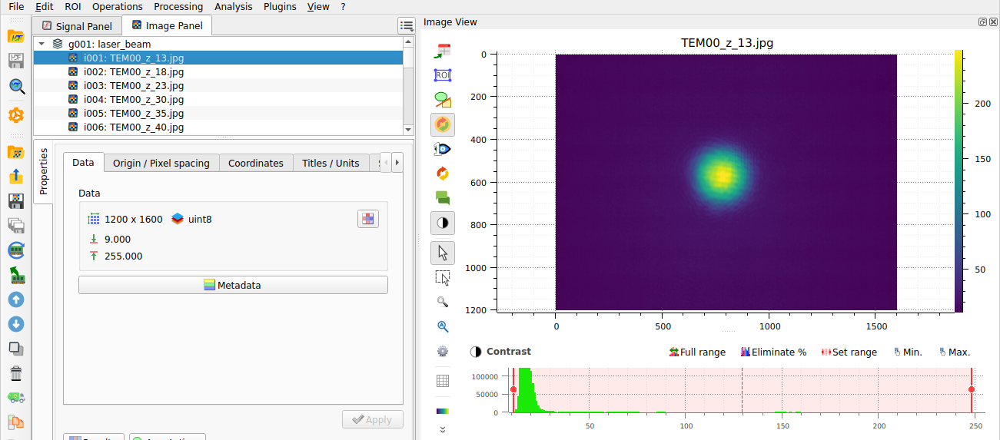
Le plugin « Plugins > Données de test > Charger le spectre de paracétamol » pour générer le spectre de test pour ce tutoriel.#
Une fois ouvert, le spectre est affiché dans la fenêtre principale. C’est un signal 1D, il est donc affiché sous forme de courbe. L’axe horizontal est l’axe de l’énergie et l’axe vertical est l’axe de l’intensité.
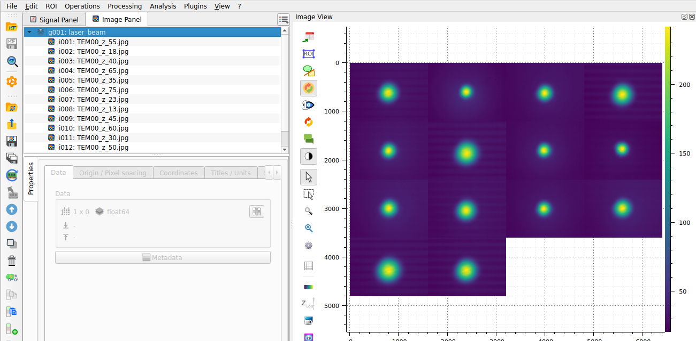
Le spectre affiché dans le panneau « Vue Signal ».#
Le signal est assez propre. Cependant, pour démontrer les capacités de filtrage de DataLab, nous allons appliquer un filtre de Wiener pour réduire tout bruit résiduel tout en préservant les caractéristiques spectrales. Ceci est disponible sous « Traitement > Réduction du bruit > Filtre de Wiener ».
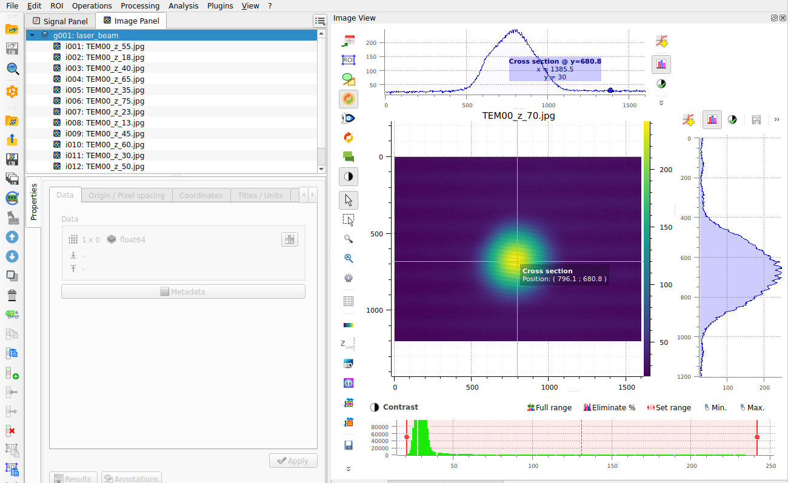
L’option de menu « Traitement > Réduction du bruit > Filtre de Wiener ».#
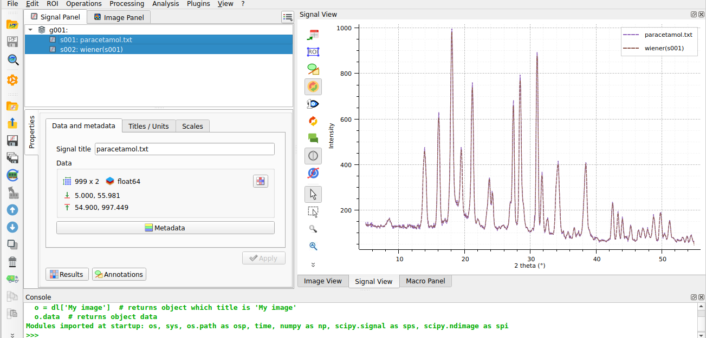
Le résultat affiché dans la fenêtre principale.#
Concentrons notre analyse sur l’un des pics d’intérêt. Pour ce faire, nous définissons une région d’intérêt (ROI) autour de la caractéristique que nous voulons analyser et utilisons le menu « ROI > Extraire… » pour l’extraire. La boîte de dialogue « Régions d’intérêt » sera affichée. Sélectionnez une zone et cliquez sur « OK ». Une fenêtre de confirmation apparaîtra—cliquez sur « Oui » pour extraire la région d’intérêt. Un nouveau signal contenant la ROI sera créé et affiché dans la fenêtre principale.
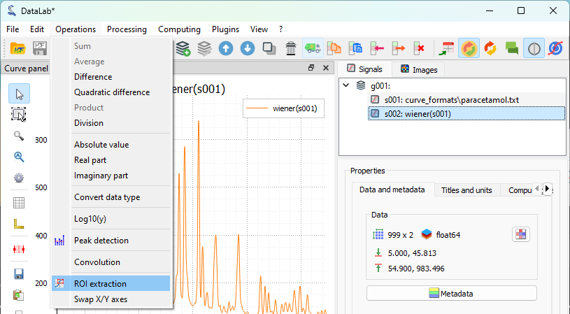
Le menu « Opérations > Extraction de ROI ».#

La boîte de dialogue « Régions d’intérêt » affichée.#
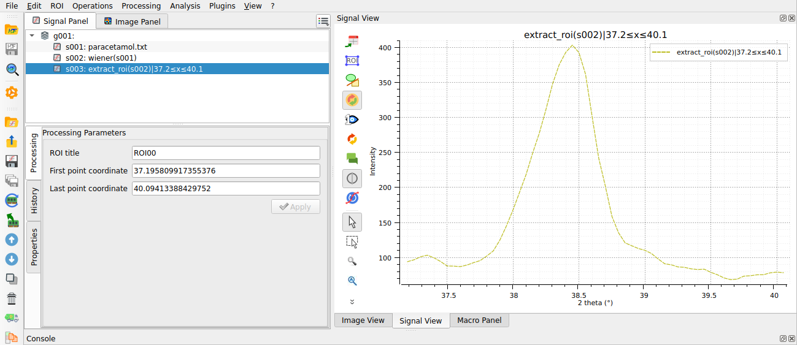
La région d’intérêt affichée dans la fenêtre principale.#
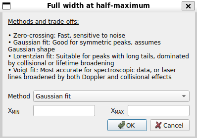
Ouvrir la fenêtre d’ajustement du modèle avec « Traitement > Ajustement > Ajustement gaussien ».#
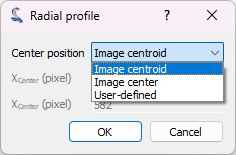
Le résultat de l’ajustement affiché dans la fenêtre principale.#
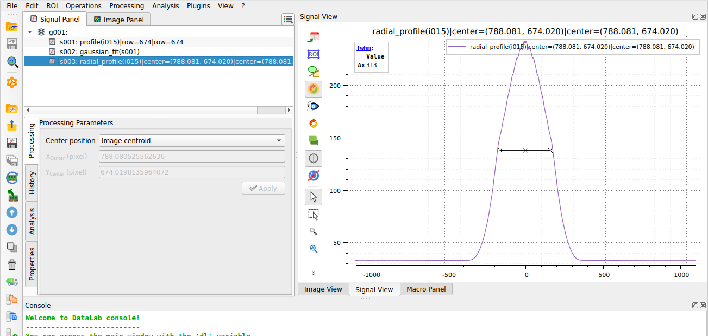
Le spectre complet et l’ajustement sont tous deux sélectionnés dans le panneau « Signaux », de sorte que les deux sont affichés dans le panneau de visualisation à gauche. Cela permet une comparaison visuelle facile si nécessaire pour l’analyse.#
Élimination de tendance linéaire#
Après avoir ajusté le pic principal, nous pouvons vouloir éliminer toute dérive de ligne de base présente dans l’ensemble du spectre. La fonction d’élimination de tendance dans DataLab effectue un ajustement linéaire sur l’ensemble du signal, y compris les pics. Dans notre signal, les pics occupent une grande partie des données, ce qui est acceptable pour les signaux où les pics sont distribués symétriquement autour du centre avec des amplitudes similaires. Cependant, ce n’est pas le cas ici, nous ne pouvons donc pas nous attendre à ce que cette fonction fonctionne bien. Néanmoins, cet exemple illustre comment les fonctions DataLab peuvent être combinées pour effectuer des analyses plus avancées.
Pour visualiser la limitation mentionnée ci-dessus, nous appliquerons la fonction d’élimination de tendance directement au signal filtré. Il est important de se rappeler que nous avons précédemment défini une ROI sur le signal pour nous concentrer sur le pic principal. Nous devons supprimer cette contrainte de ROI pour effectuer l’élimination de tendance sur le signal complet. Pour exécuter l’élimination de tendance, nous utilisons « Traitement > Élimination de tendance », choisissons la méthode d’élimination de tendance linéaire et cliquons sur « OK ». Le résultat sera affiché dans la fenêtre principale.
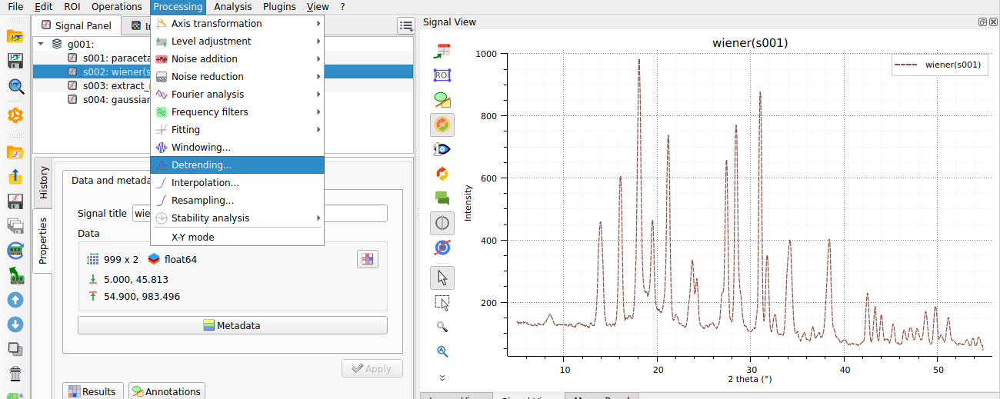
La fonction « Traitement > Élimination de tendance ».#
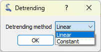
Nous choisissons une méthode d’élimination de tendance linéaire, et nous cliquons sur « OK ».#
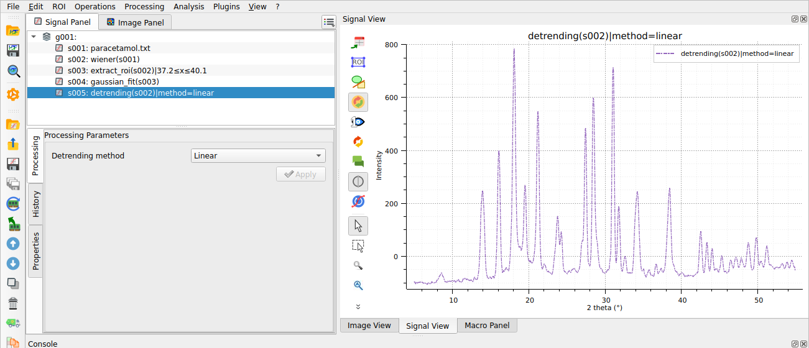
Le résultat de l’élimination de tendance affiché dans la fenêtre principale.#
La comparaison des signaux filtrés et sans tendance montre, comme prévu, que la fonction d’élimination de tendance ne fonctionne pas bien sur ce signal. Comme expliqué précédemment, c’est parce que l’algorithme effectue un ajustement linéaire sur l’ensemble du signal, y compris les pics. L’effet est clairement visible dans le tracé : les pics les plus élevés à gauche commencent à une valeur d’intensité inférieure à ceux de droite après l’élimination de tendance, et tous les pics ont une ligne de base en dessous de zéro.
Élimination de tendance améliorée avec exclusion des pics#
Pour surmonter la limitation de la fonction d’élimination de tendance, nous pouvons nous inspirer du comportement du signal sans tendance. Nous avons déjà identifié le problème : l’ajustement linéaire inclut à la fois la ligne de base et les pics.
Pour une meilleure élimination de tendance, nous pouvons d’abord exclure les pics puis effectuer un ajustement linéaire uniquement sur les régions sans pics. Nous pouvons raisonnablement nous attendre à ce que cette approche fournisse une estimation de ligne de base plus précise et un signal sans tendance de meilleure qualité.
Ceci est illustré dans les étapes suivantes :
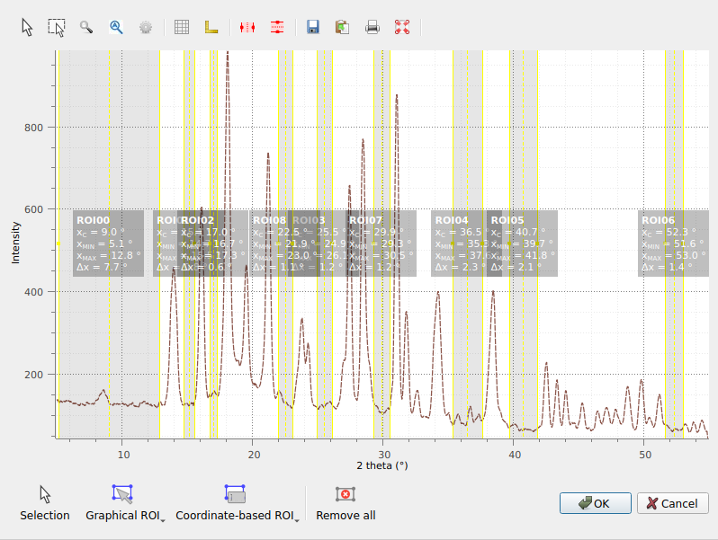
Nous sélectionnons les régions correspondant aux régions sans pics.#
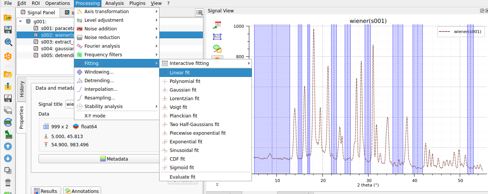
Un ajustement linéaire est effectué uniquement sur les régions sélectionnées.#
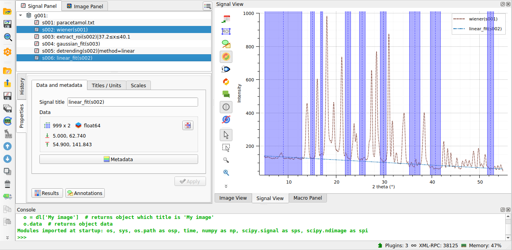
La ligne de base linéaire obtenue à partir de l’ajustement est affichée.#
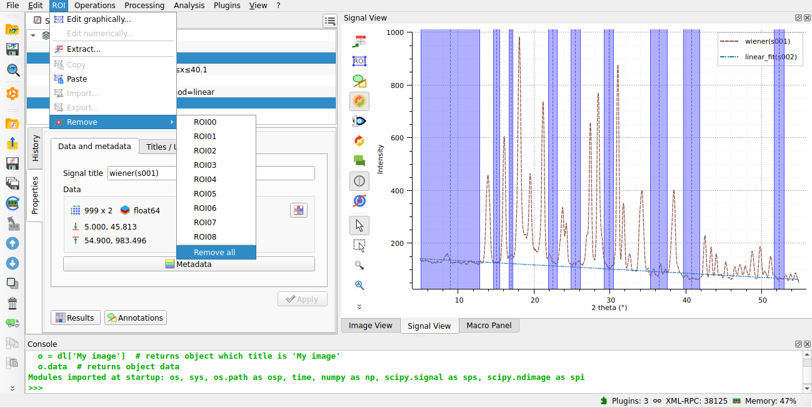
Nous supprimons les ROIs pour appliquer l’élimination de tendance sur l’ensemble du signal.#
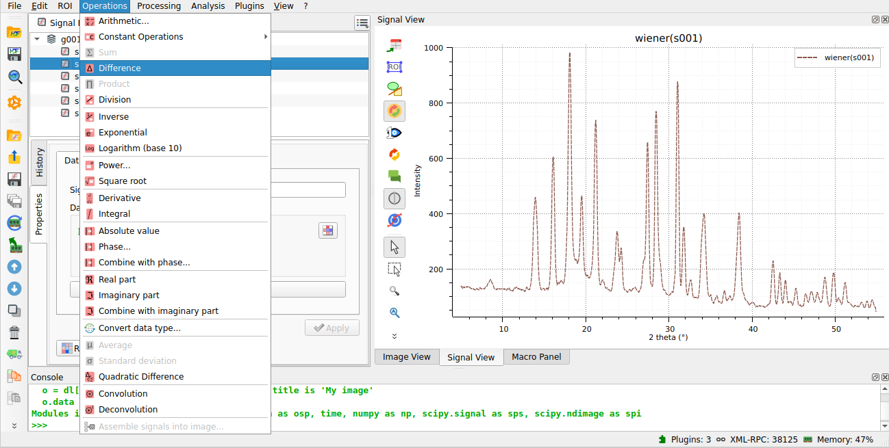
Nous utilisons l’opération « différence » pour soustraire la ligne de base du signal d’origine.#
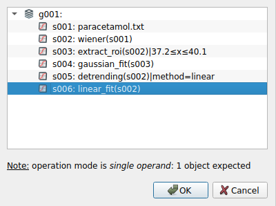
Nous sélectionnons la ligne de base linéaire pour effectuer la soustraction.#
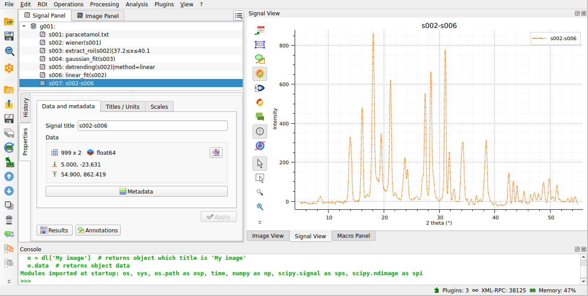
Le signal sans tendance résultant est affiché, maintenant avec une ligne de base correcte.#
Détection automatique des pics#
Nous pouvons utiliser la fonction « Ajustement multi-gaussien » de DataLab pour identifier et ajuster automatiquement plusieurs pics dans le spectre en sélectionnant « Traitement > Ajustement > Ajustement multi-gaussien » dans le menu.
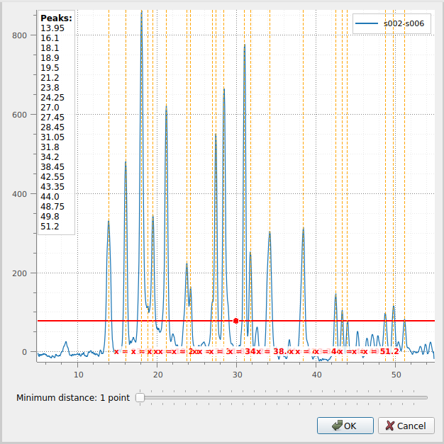
Tout d’abord, la boîte de dialogue « Détection de pics de signal » apparaît. Vous pouvez ajuster la position du curseur vertical pour définir le seuil de détection des pics et spécifier la distance minimale entre les pics. Ensuite, cliquez sur « OK ».#
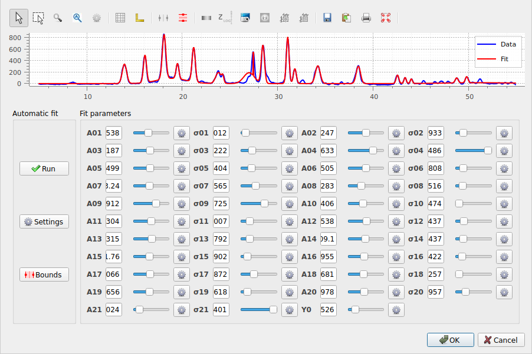
La boîte de dialogue « Ajustement multi-gaussien » apparaît. Un ajustement automatique est effectué par défaut. Cliquez sur « OK » (ou ajustez éventuellement les paramètres manuellement à l’aide des curseurs, ou modifiez les paramètres d’ajustement automatique).#
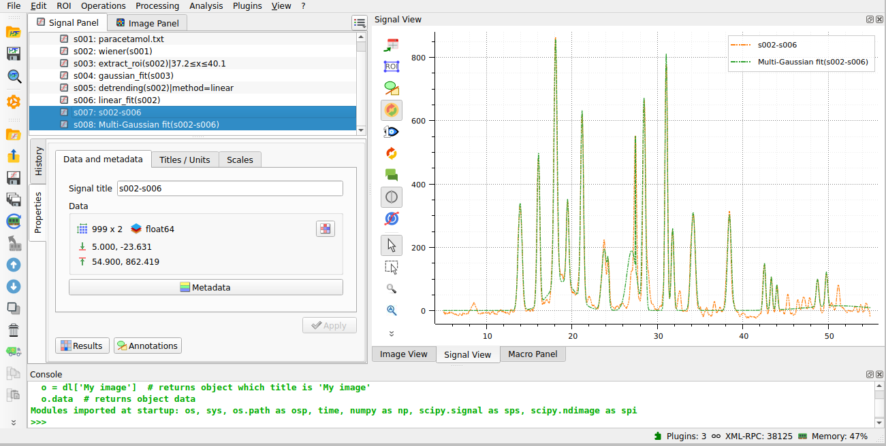
Le résultat de l’ajustement est affiché dans la fenêtre principale. Ici, nous avons sélectionné à la fois le spectre et l’ajustement dans le panneau « Signaux » à droite, donc les deux sont affichés dans le panneau de visualisation à gauche.#
Alternativement, nous pourrions utiliser la fonction « Détection de pics » du menu « Analyse » pour détecter les pics dans le spectre. Il s’agit de la première étape de la fonction « Ajustement multi-gaussien » et peut être utilisée indépendamment pour détecter les pics sans effectuer d’ajustement, créant un signal avec une fonction delta à chaque position de pic détectée.
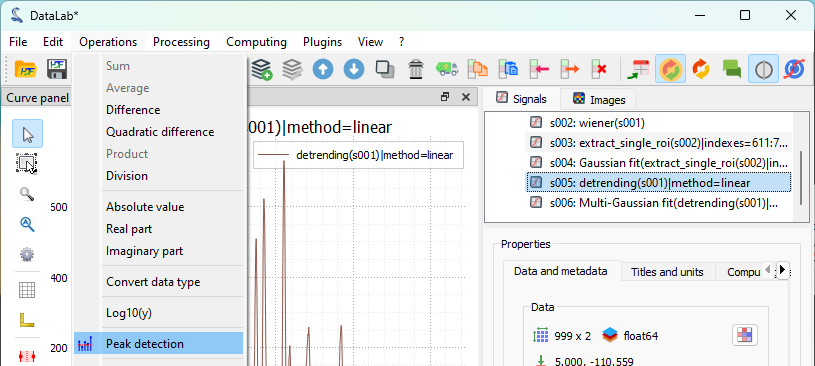
Ouvrir la fenêtre « Détection de pics » avec « Analyse > Détection de pics ».#
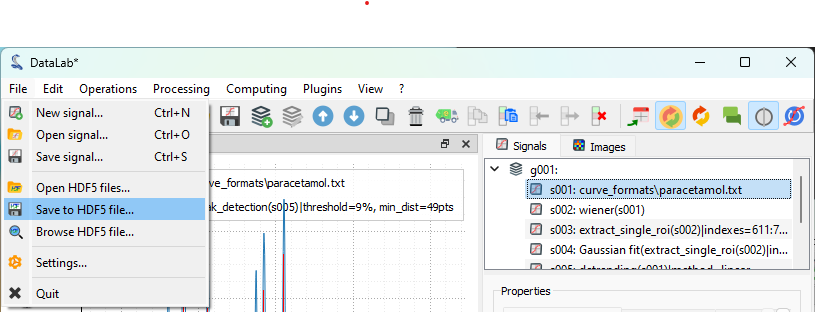
Après avoir ajusté les paramètres de détection de pics (en utilisant la même boîte de dialogue que pour l’ajustement multi-gaussien), cliquez sur « OK ». Ensuite, sélectionnez à la fois le résultat « détection_de_pics » et le spectre d’origine dans le panneau « Signaux » pour les afficher ensemble dans le panneau de visualisation à gauche.#
Sauvegarde de l’espace de travail#
Enfin, nous pouvons sauvegarder l’espace de travail dans un fichier. L’espace de travail contient tous les signaux chargés ou créés dans DataLab, ainsi que les résultats de traitement et les paramètres de visualisation (tels que les couleurs de courbe).
Sauvegarder l’espace de travail dans un fichier avec « Fichier > Sauvegarder dans un fichier HDF5… », ou le bouton  dans la barre d’outils.#
dans la barre d’outils.#
Si vous voulez charger à nouveau l’espace de travail, vous pouvez utiliser le « Fichier > Ouvrir un fichier HDF5… » (ou le bouton  dans la barre d’outils) pour charger l’ensemble de l’espace de travail, ou le « Fichier > Parcourir un fichier HDF5… » (ou le bouton
dans la barre d’outils) pour charger l’ensemble de l’espace de travail, ou le « Fichier > Parcourir un fichier HDF5… » (ou le bouton  dans la barre d’outils) pour charger uniquement une sélection d’ensembles de données de l’espace de travail.
dans la barre d’outils) pour charger uniquement une sélection d’ensembles de données de l’espace de travail.